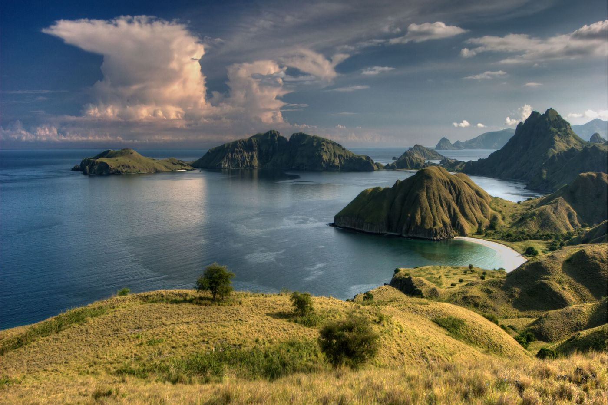

PENYUGUARD
Sistem pemantauan perjumpaan penyu, kondisi perairan, dan pemetaan interaksi pesisir di Pulau Rinca, Taman Nasional Komodo.
PenyuGuard mengintegrasikan Artificial Intelligence, Geographic Information System, dan analisis oseanografi untuk mendukung pemantauan dan konservasi penyu di Pulau Rinca.
Dinamika Perairan Pulau Rinca
Memeriksa sumber data…Pantau catatan perjumpaan, lokasi pengamatan, spesies, dan kondisi perairan. Cakupan setiap ringkasan mengikuti data yang tersedia di platform.
Apa yang Ada di PenyuGuard?
PenyuGuard menyatukan data perjumpaan penyu, peta lokasi budidaya, parameter oseanografi, materi konservasi, dan kanal pelaporan dalam satu platform untuk membantu publik memahami kondisi perairan Pulau Rinca dan Taman Nasional Komodo.
- Pemantauan persebaran penyu penting karena data perjumpaan yang terdokumentasi menjadi indeks kehadiran penyu di perairan yang sama dengan aktivitas masyarakat pesisir.
- Interaksi penyu dan manusia — seperti tangkapan sampingan (bycatch) dan tumpang-tindih dengan budidaya rumput laut — memerlukan pendekatan mitigasi yang berbasis data, bukan asumsi.
- Analisis oseanografi menyajikan SST, klorofil-a, dan salinitas berdasarkan periode dengan sumber data tersedia.
- Edukasi dan konservasi memuat katalog Penyu Hijau dan Penyu Sisik, informasi habitat, ancaman, dan panduan pelaporan.

Penyu Hijau & Penyu Sisik
Katalog publik berfokus pada dua spesies yang terdokumentasi di perairan Taman Nasional Komodo: Penyu Hijau (Chelonia mydas) dan Penyu Sisik (Eretmochelys imbricata).
Satu Platform untuk Pemantauan Pesisir
Gunakan data perjumpaan dan kondisi perairan untuk mendukung pemantauan penyu di Pulau Rinca.
Dashboard Analitik
Ringkasan data perjumpaan, sumber data, lokasi budidaya, dan parameter oseanografi yang tersedia.
Buka DashboardPeta Persebaran
Peta perjumpaan penyu, lokasi budidaya, dan area kajian awal budidaya dengan catatan batas rekomendasinya.
Buka PetaOseanografi
Telusuri SST, klorofil-a, dan salinitas pada periode yang tercakup dalam tiap dataset.
Lihat AnalisisAnalisis AI
Unggah foto penyu untuk identifikasi spesies otomatis (YOLOv8) serta estimasi panjang karapas dan usia saat dilengkapi ArUco Marker.
Buka Analisis AIEdukasi & Konservasi
Katalog Penyu Hijau dan Penyu Sisik, informasi habitat, ancaman, dan panduan konservasi.
Buka EdukasiLaporkan Perjumpaan
Kirim informasi perjumpaan penyu agar dapat diperiksa dan diverifikasi petugas.
Buat Laporan
Kenali Perairannya,
Jaga Biota di Dalamnya
Perairan Rinca menjadi habitat penyu sekaligus ruang hidup masyarakat pesisir. Catatan perjumpaan dan kondisi habitat dapat membantu mengarahkan pemantauan serta upaya mengurangi ancaman, termasuk tangkapan sampingan.
Pelajari konservasiSetiap Catatan Perjumpaan
Berarti bagi Konservasi
Setiap pengamatan, laporan, dan keputusan berbasis data ikut menjaga masa depan penyu di perairan Pulau Rinca.